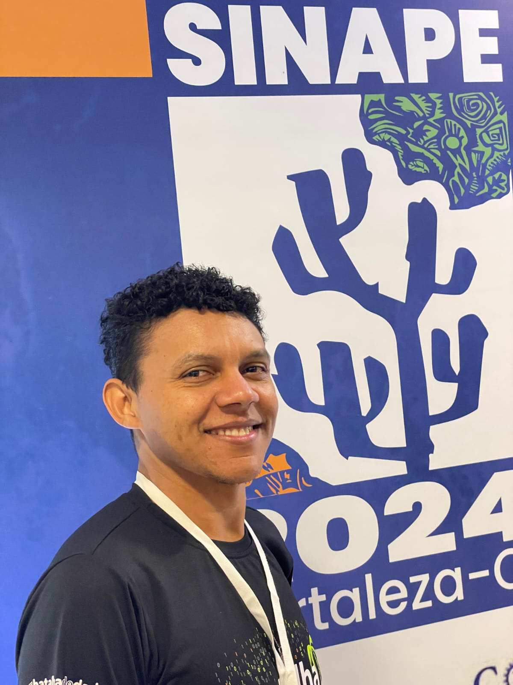

Introdução
0.1 Quem sou eu!

- 👤 Sou Gean Pereira Damaceno
- 🎓 Técnico em Administração pelo IFPI (2019).
- 🎓 Graduado em Licenciatura em Matemática pelo IFPI (2023).
- 🎓 Mestre em Estatística e Experimentação Agropecuária pela UFLA (2025).
- 📚 Estudante de estatística no Departamento de Estatística da UFLA.
- 💼 Bolsista na Zetta no projeto do Ministério da Gestão e da Inovação em Serviços Públicos (MGI).
- 🗺️📊 Grupo de pesquisa em estatística espacial (GPS) da UFLA: GPS
📧 Email: gedamaceno030@gmail.com 🌐 Website: Site
📍 Este minicurso apresenta métodos de análise de dados de áreas (lattice data), abordando desde os conceitos fundamentais até a aplicação prática de modelos de regressão espacial.
🎯 O público-alvo inclui estudantes e profissionais com conhecimentos básicos em regressão e estatística espacial.
📘 O material é baseado no livro Análise de Dados Espaciais com Aplicações em R (Scalon 2024). O conteúdo também se baseia em minha dissertação de mestrado acesse a dissertação aqui.
✍️ Como citar este minicurso:
Damaceno, G. P. (2026). Minicurso de Estatística Espacial em R.
📥 Baixar citação BibTeX:
Download do .bib
Os principais objetivos deste minicurso são:
- Introduzir os conceitos fundamentais da estatística espacial aplicada a dados de áreas.
- Apresentar métodos de dependência espacial, matrizes de pesos e autocorrelação (Moran).
- Demonstrar modelos de regressão espacial (SAR e SEM) usando a linguagem R.
- Fornecer exemplos práticos e exercícios para consolidar o aprendizado.
📅 1º Dia: 15 de junho
- Instalação do Software R e IDE RStudio
- Introdução à Estatística Espacial
- Fundamentos de Dados de Áreas (centroides, matrizes de pesos)
- Autocorrelação espacial (Moran I global e local, LISA)
- Modelos de Regressão Espacial (SAR e SEM)
- Diagnóstico e seleção de modelos
📅 2º Dia: 16 de junho
- Prática: Estudo de caso completo com dados reais
- Aplicação dos modelos em R (OLS, SAR, SEM)
- Visualização e mapas temáticos
- Clusters LISA e interpretação dos resultados
1 Agradecimentos e Apoio
- (MGI): Ministério do Desenvolvimento e Inovação em Serviços Públicos. MGI
- (Zetta) Agência UFLA de Inovação em Geotecnologias e Sistemas Inteligentes no Agronegócio. Zetta
- (ICET): Instituto de Ciências Exatas e Tecnológicas (Sede). ICET
- (UFLA): Universidade Federal de Lavras, instituição de ensino e pesquisa. UFLA
- (BJB): Brazilian Journal of Biometrics. BJB
- (DES): Departamento de Estatística - UFLA. DES